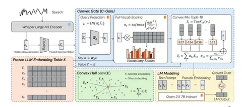
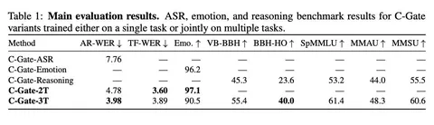

Сегодня разбираем статью Microsoft Research о том, как подключать аудио к LLM.
В стандартном подходе берут аудиоэнкодер, например предобученный ASR, обучают адаптер и через него подают аудиопредставления в LLM. Здесь предлагают не позволять адаптеру генерировать произвольные вектора, а собирать их только из тех эмбеддингов, которые уже есть в embedding table LLM. Для этого авторы предлагают Convex Gate (C-Gate) — представления из аудиоэнкодера преобразуются в точки внутри выпуклой оболочки эмбеддингов LLM.
Как всё работает
1) Звук прогоняют через Whisper Large-v3, забирают hidden states и делают mean pooling со stride 4.
2) Берут замороженную embedding table LLM. Аудиопредставления через Wq проецируются в queries, а эмбеддинги словаря через Wk в keys. При этом values остаются исходными эмбеддингами LLM без домножения на матрицу.
3) Дальше идёт классическое перемножение запросов на ключи, софтмакс, и получаются скоры для эмбеддингов из LLM.
4) Берут только топ-16 эмбедов по полученным скорам, нормализуют и собирают из них один вектор — он лежит в выпуклой оболочке исходных эмбеддингов LLM. И его и подставляют в LLM наряду с текстовыми токенами.
Аудиоэнкодер заморожен, но сама LLM не совсем: авторы дообучают self-attention в первых 24 слоях Qwen2.5-7B-Instruct. В итоге обучаемых параметров здесь довольно много — около 700М, из которых на сам C-Gate приходится всего 2,5M.
Учат модель сразу на трёх задачах: распознавание речи, классификацию эмоций и speech reasoning. Для мультитаска используют dynamic loss weighting и EMA smoothing. То есть веса лоссов разных задач меняются по ходу обучения в зависимости от того, насколько хорошо уже выучилась конкретная задача.
Почему это прикольно
Авторы говорят, что так мы не меняем базис пространства, с которым работает LLM. Обычные токены из embedding table и так после self-attention превращаются во взвешенные суммы эмбеддингов. Здесь почти то же самое: получаем взвешенную сумму известных эмбедов и остаемся внутри их выпуклой оболочки.
По замыслу это должно уменьшать дрифт базиса, но при этом не заставлять аудио превращаться в дискретные текстовые токены — тогда потерялись бы эмоции, просодия и другая паралингвистическая информация.
Ещё появляется некоторая интерпретируемость: можно посмотреть, какие top-16 токенов выбраны на каждом шаге.
Что получилось
Авторы показывают что на базовых задачах качество при обучении этим методом получается нормальное для их размеров моделей. При мультитаск-обучении на распознавании и эмоциях оба бенчмарка растут, а если добавить ризонинг-задачи, то и его качество улучшается относительно однозадачного обучения. Но не раз делают акцент на том, что на SOTA не претендуют и работа больше исследовательская.
Ещё в статье делают ряд дополнительных проверок, чтобы понять, что именно важно в полученной траектории эмбеддингов. Например, интересно, что веса топ-16 векторов, в которые проецируют аудиоэмбеды, часто близки к равномерному распределению.
В целом концепт занятный, но главный вопрос остаётся: насколько выигрыш даёт именно ограничение на convex hull, а насколько — просто дополнительное capacity? По сути, C-Gate всё равно остаётся адаптером, просто с очень специфической геометрией выхода. То есть очень не хватает эксперимента-сравнения с обычной схемой с адаптером с тем же числом обучаемых параметров. Забавно, что именно этот эксперимент сами авторы называют следующим шагом.
Даниил Волгин

